TSU-04 · case 5 of 11 · This Side Up
Bullet time, for real
One photograph can fake an orbit. What does a real one take?
The lean, six ways in one day: 3D cards, the real turntable photos on the computed roof, the same photos on a Marble 2 rooftop, and three more Marble runs.
How it was made
- Film Boone on the butter churn (a turntable stool) holding one pose. Nine phone clips.
- Solve the turntable angle per frame from tracks on the disc; skip hand frames.
- Run structure-from-motion on the cut-out frames to get the orbit.
- Ask Marble 2 for the rooftop along that orbit, a view every 5 degrees.
- For each frame of the lean, take the view and the photo nearest the wanted angle and stand him in it.
What this case teaches
- The same 10.6 s of lean, rebuilt six times, shows exactly what each change does.
- A generated world is only as steady as its conditioning: each batch of views is conditioned on the posed roof and the most recent views.
How it differs. The first case where Boone's body is real photographs at every angle.
Versions, in order
Every cut that was rendered, oldest first, with what changed from the one before. Videos are 640 px web encodes.
-
01
Lean 1: 3D cards
Oct 18 10:06 · 0:11From Tempus Fugit v1. Boone is cards of his photos on the ray-cast roof.
-
02
Lean 2: the churn
Oct 18 11:07 · 0:11Real turntable photos, chosen by solved angle, on the ray-cast roof.
-
03
Lean 3: Marble 2
Oct 18 11:57 · 0:11The same photos on a rooftop generated by Marble 2 along the solved orbit.
-
04
Lean 4: run 1
Oct 18 12:18 · 0:11Another Marble run. The frames show a lower, closer camera on the same pose.
-
05
Lean 5: run 1b
Oct 18 12:37 · 0:11Run 1 again, tighter on Boone.
-
06
Lean 6: run 2
Oct 18 12:58 · 0:11He starts standing and leans through more than one real pose clip to nearly horizontal.
-
07
Tempus Fugit, Marble edition
Oct 18 12:00 · 0:55The full film with lean 3.
Same moment, six leans
The lean is 10.6 s in every version, on the same measured camera path, so each column is the same instant.


Prompts and notes
What was pasted into the session, in order, and what each one did. Full text verbatim; each also has its own page under Docs.
The World Labs announcement of the Atlas world model, pasted in before the rooftop runs. Summarised here, not republished.
Read it all (139 words)
World Labs announcement of Atlas, an "omni world model for spatial intelligence" (dated September 1, 2026), pasted into the session at Oct 18 11:13. It is a third-party announcement, so it is summarised here rather than republished. What the rooftop runs took from it: - Atlas makes and poses whole places, not single pictures: images2PosedRGBD returns an image with metric depth and a camera, and generation can be conditioned on posed views. - So the rooftop could be asked for view by view along Boone's solved turntable orbit (every 5 degrees, 0 to 205), each batch conditioned on the posed roof and the most recent views. - Every view comes with depth, which the composite uses to stand Boone at the orbit centre at the right scale. The product appears on this site under its model name, Marble 2.
The sheets, step by step
Grouped by stage of the work, with the time each file was written. Click any sheet to see it full size; the arrow keys move through them.

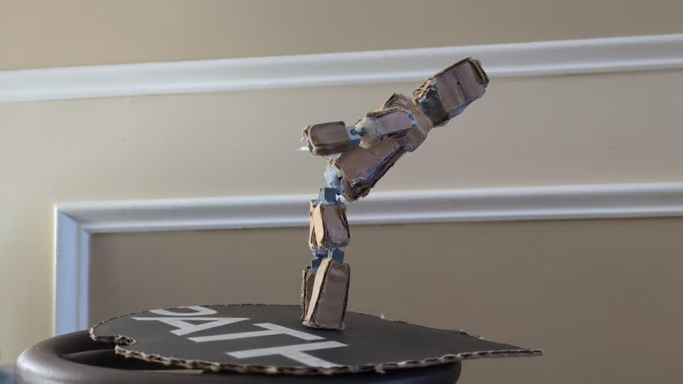

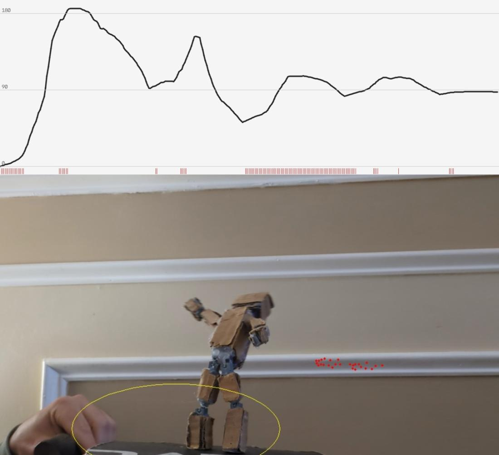

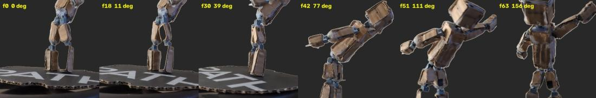

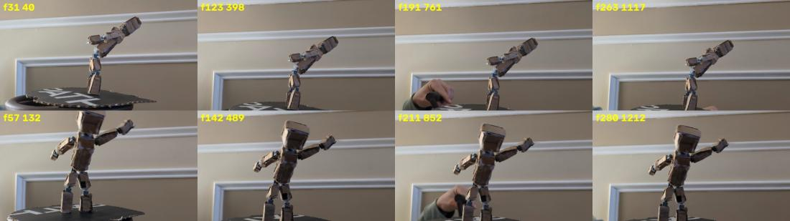

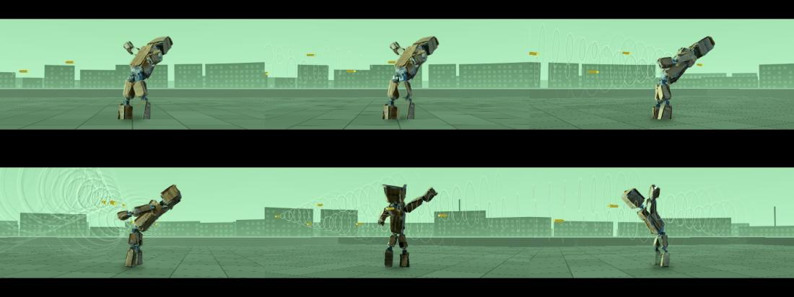


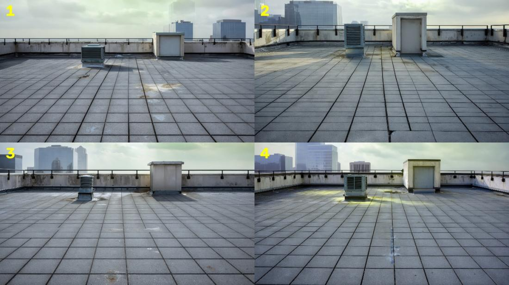

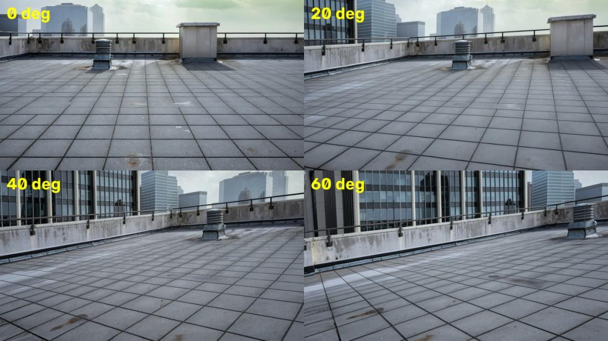

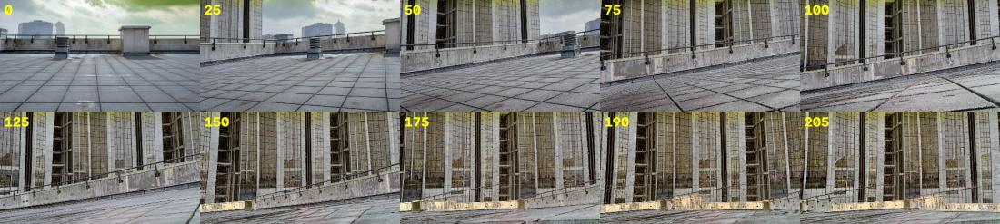

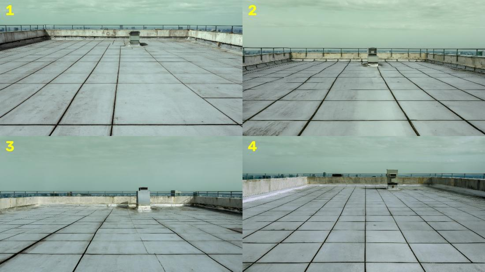

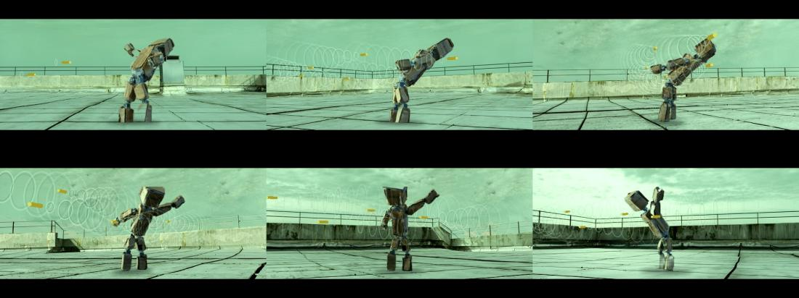

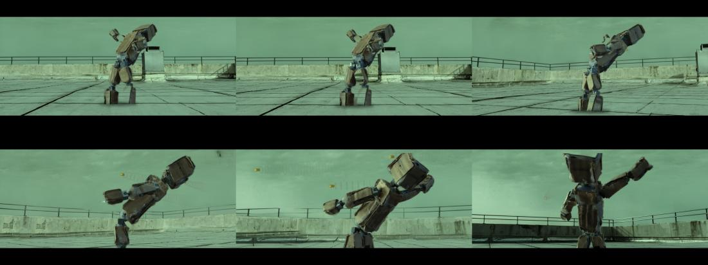

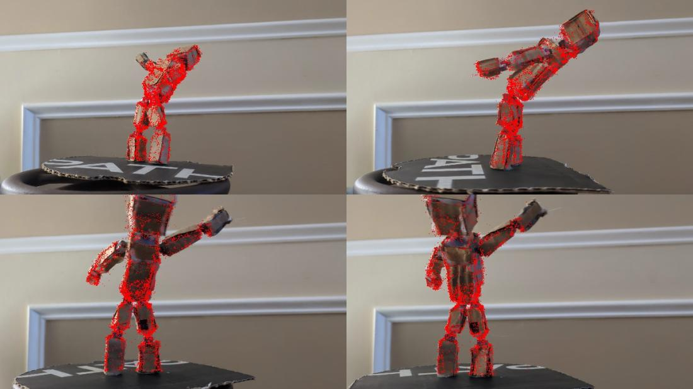

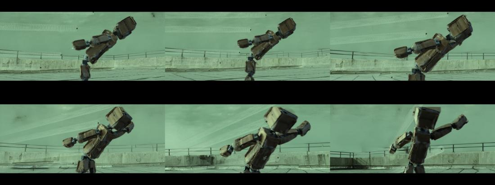

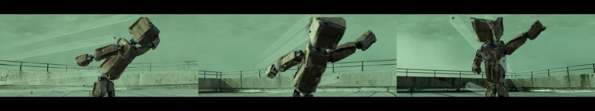

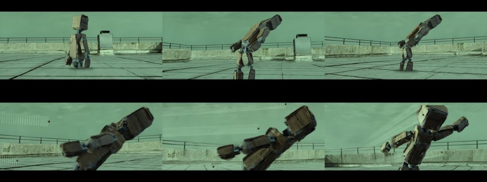

What broke and what changed
- The single-photo mock-up could only slide layers.A real orbit on the turntable, solved.
- Hands came into frame to turn the stool.Hand frames are skipped and any hand left is cut from the matte.
- The ray-cast roof looked computed next to real photographs.A Marble 2 rooftop generated along the solved orbit.
Read the record
Carried forward
Photos chosen by solved angle become Boone's body in every built world that follows.